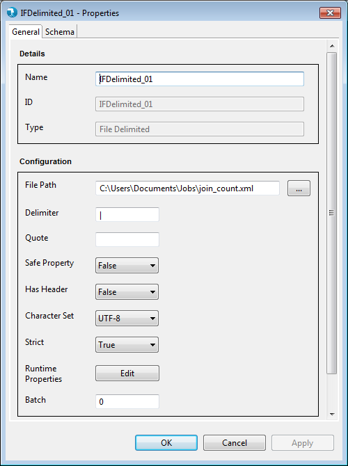
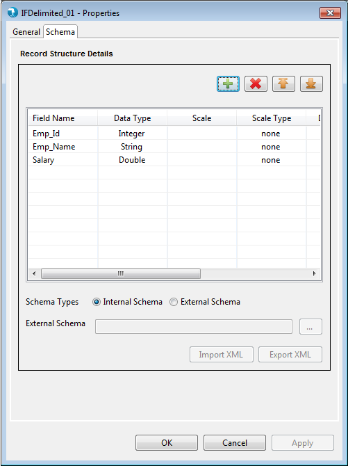

Input File Delimited Properties
Hydrograph Release Version 1.0
Properties for the Input File Delimited component can be viewed by Double click->component on canvas. The properties contain a 'General' tab and a 'Schema' tab. Common and mandatory properties are present in the General tab. Schema displays option to accept the field schema i.e. field name, Data type, scale etc.
General Properties:

Display
- Name - The Name field will specify the name of the component as desired by the user.
- Base Type - Base Type signifies the basic operation area of the component. In this case it is of Base Type Input.
- Type - Type further categorizes the component to detailed operation that it intends to perform. Here it is of type File Delimited.
Configuration
- File Path - File path is used to specify the path of the input delimited file present either in the File system or on the cluster. User can either manually type the path in the text box provided or use the Browse button to search for the file and select it. Alternatively, the user can parameterize the File path where the parameter value will be resolved at run-time.
- Delimiter - The Delimiter field accepts the delimiter that is present in the input file selected. By default the delimiter passed to this component is '|'
- Quote - Quote field accepts the masked character used to mask the delimiter in the input file. When the quote is given, all the delimiters which are followed by this quote, will not be considered as delimiters rather considered as text.
- Safe Property - This property accepts Boolean values True and False. It can also be parameterized and later on resolved during run-time. The Safe property when True, allows the input fields to pass evaluation despite of Data type mismatch. When False, fields with Data type mismatch will be rejected and the component will abort processing returning an error.
- Has Header - This property accepts Boolean values True and False. It can also be parameterized and later on resolved during run-time. Has Header is simply used to signify whether an input file contains a header or not. When True, component assumes the first row of the file to be the header. Reverse in case of False.
- Character Set - Contains a drop-down of character encoding values. Used simply to denote the encoding system followed by the input file to denote characters of data. Drop down lists contains values like : UTF8, US-ASCII, ISO-8859-1 etc.
- Strict - Strict accepts Boolean values True and False. It can also be parameterized and later on resolved during run-time. Strict property is used to check if the record structure i.e. number of fields, length of records, scale etc are exactly listed by the user as in the input file. When set to True, the component fails if the record structure doesn't match with the one specified by the user. Reverse in case of False.
- Runtime Properties - Runtime properties are used to override the Hadoop configurations specific to Input File Delimited component at run time. User is required to enter the Property Name and Value in the runtime properties grid.

- Phase - Phase simply accepts a numeric number starting from 0 to maximum 99 and signifies the phase this component will execute in. By default this is 0.
Schema tab:

Schema Types
- Internal - User is provided a Grid to enter the internal schema of the Input Delimited file.
- Field Name - User needs to enter all the Field names in this column.
- Data type - By default "string" Data type has been selected for any field added to the Grid. User can select from different Data type values like "integer", "double", "float" etc.
- Date Format - User can specify desired date format like "YY-DD-MM", "YYYYMMDD" etc for a date field in this column.
- Precision - Precision for a bigdecimal field can be specified here.
- Scale - Scale for a bigdecimal field can be specified here.
- Scale Type - Scale Type accepts values as implicit or explicit for bigdecimal field and none for other data types. Explicit considers the length of ' . ' and implicit ignores length of ' . ' for the bigdecimal field.
- Field Description - User can specify field description.
- External - User can provide an external Hydrograph Schema file of XML format. A text box is provided to either manually type or use the Browse button to select the schema file from File system. The External schema file path is resolved during run time and replaced with the contents of the file in the Job XML.